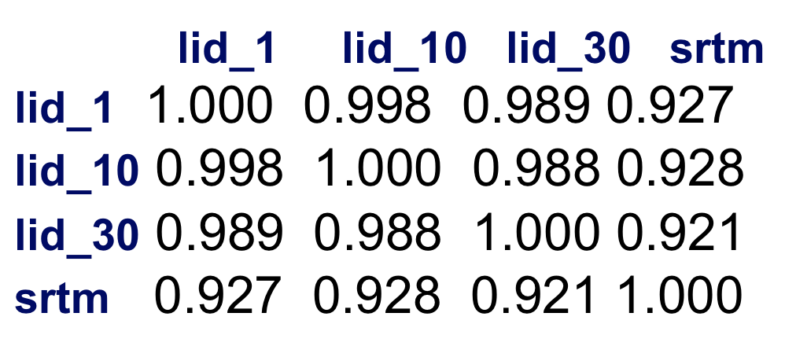

Geospatial Analysis
Basic raster operations
Helena Mitasova
Learning objectives
- Explain global and zonal statistics
- Define neighborhood operations
- Understand raster map algebra
- expressions, operators, functions and variables
- basic calculations, integer and floating point data
- "if" conditions, handling NULLs and creating masks
- Define raster mosaicking and patching
- Explain raster map reclassification and rescaling
Summary statistics
Continuous raster data:
- stored numbers are values quantifying the phenomenon
- univariate statistics: min, max, mean, standard deviation, median
- histogram (requires discretization into bins)
Can be applied as global, zonal, or focal operations
Summary statistics
Discrete raster data:
- stored numbers can be values (quantitative data) or category numbers (qualitative data)
- values apply to an area rather than grid cell
- univariate statistics can be applied only to quantitative attributes
- mode (most frequent cat), diversity (number of different cats) apply to category data
Can be applied as global, zonal, or focal operations
Global statistics: continuous data
- Map layer to number(s)
- Compare elevation data from different sources using mean, standard deviation and histogram
- Identify data anomalies and potential artifacts
Global statistics: continuous data
Elevation from different sources: correlation matrix



Global statistics: discrete data
Map layer to number(s)
Soil properties: erodibility mean OK, soil type ID use mode
Image composit: slide 9
this slide can be skipped
Zonal statistics: continuous data
Continous data map layer to discrete data map layer
Example from hydrology:
mean slope for a watershed to estimate how fast water is moving through it
- Raster 1: discrete raster (watershed)
- Raster 2: continuous field (slope)
- Resulting raster 3: mean slope each watershed (discrete raster)
- Resulting raster 4: standard deviation of mean slope for each watershed (discrete raster)
- What does it mean for the movement of water if stdv is high relative to mean?
Image composit: see slide 12
Zonal statistics: category data
Discrete data map layer to discrete data map layer
Example from land use analysis:
Find prevailing land cover in zipcodes/census blocks? to support regional planning
- Raster 1: discrete raster (zipcodes)
- Raster 2: discrete raster (land use)
- Resulting raster 3: most frequent land use
- Resulting raster 4: number of different categories
- guess the classes in the results or compare 96 and 2011
Image composit: see slide 14
Neighborhood operations
- Focal operations: value at a grid cell is function of its neighborhood values.
- Grid cell neighborhood – moving window, square or circular
- Same rules apply for continuous and discrete data as for global and zonal stats
- Basic univariate statistics, special filters (image processing app)
Neighborhood operations: smoothing
Smoothing noise in DEM: focal mean with 5x5 window
Show equation
Image composit: see slide 18
Neighborhood operations: focal diversity
Diversity in landuse? skip this?
Image composit: see slide 20
Raster map algebra
Computes a new raster map using expression built by applying logical and/or arithmetic operators,
mathematical functions to existing raster maps representing variables:
newmap = expression (map1, map2, ...map3)
Local: Expression is applied on per-cell basis
Raster map algebra
Each software has its own syntax and set of operators and functions, examples:
- Logical operators and functions:
- less than, equal,
- and, or, not, ...;
- if(x), if(x,a,b)
- Arithm. Operators
- Math. Functions:
- exp(x,y),sin(x),log(x)
- min(x1,x2,..), max(), median()
Raster map algebra: logical expressions
- apply to both continuous and discrete (category) data and their combination
- use for complex reclassification, masking and overlays
- Example: find all forested areas with elevation > 120m
use more meaningful example
GRASS GIS expression
highforest = "if(landclass96==5 && elevation > 120., elevation, null())”
ArcGIS expression
ADD
Image composit: see slide 30
Raster map algebra: math functions
better example?
Example: for all forested areas, compute sediment transport capacity using the following equation
equations
GRASS GIS expression
sediment = "if(landclass96==5, exp(contrib_area,1.5) * sin(slope), null())”
ArcGIS expression
ADD
Image composit: create new
Raster map algebra: null data
- Raster maps can include NULL data (no-data), each software has its own rules how to handle them in map algebra operations
- General rule: If a cell is null in at least one map (variable) then it is null in the resulting map
- "If “ statements can test for null and/or assign a cell null value based on the if condition
- Special operators can be implemented to extend the rules applied to nulls
Raster map algebra: null data
example slide 32
Raster map algebra: null data
example slide 33
More raster map algebra
learn more in assignments and in manuals
Summary
- geospatial data acquisition
- projections, coordinate transformations, georeferencing
- raster and vector data models
- geospatial data formats
- data repositories, wms services, metadata
- open science: open data, open source software, open access